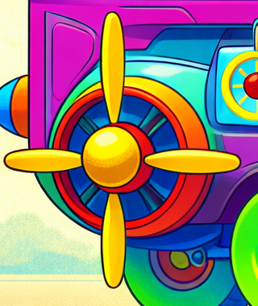
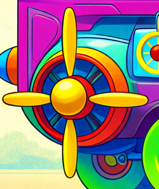
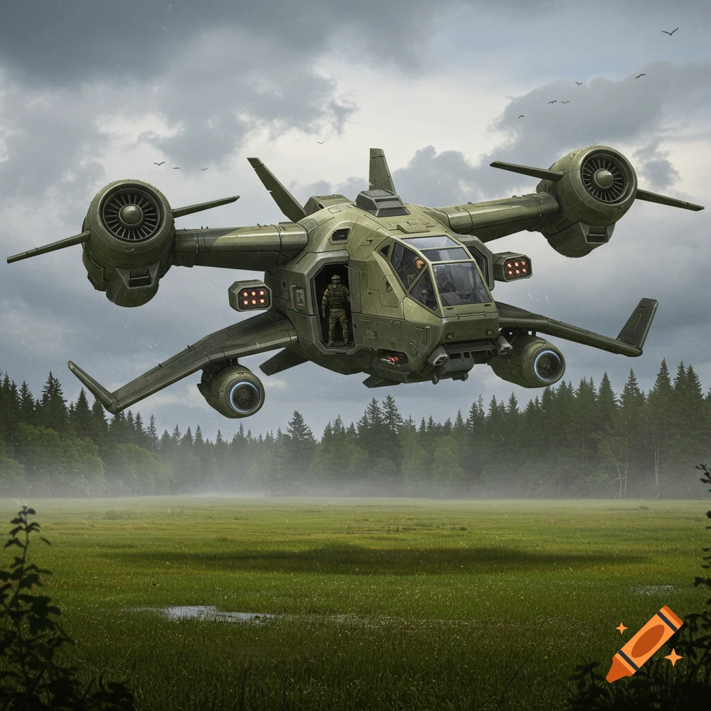
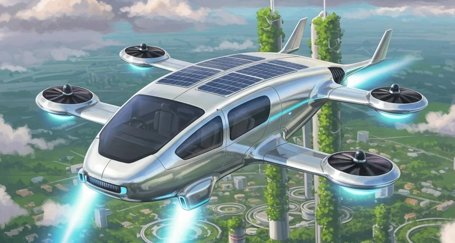
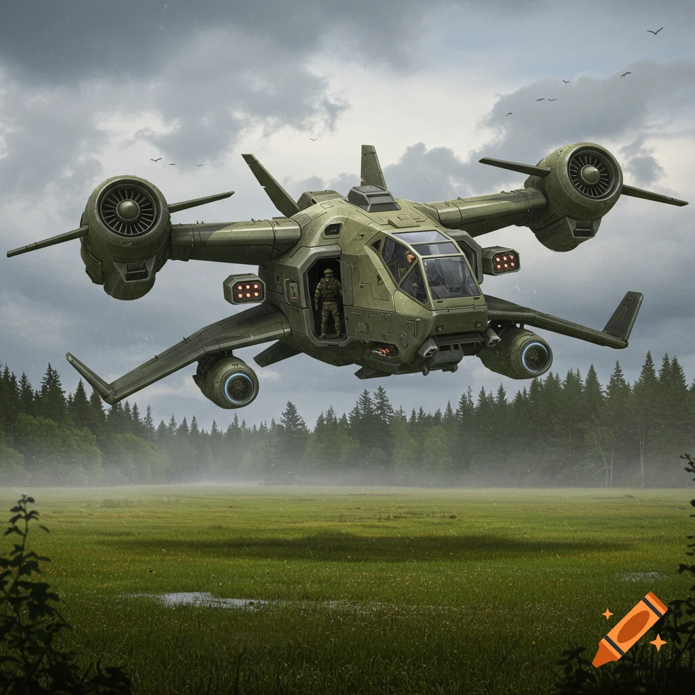
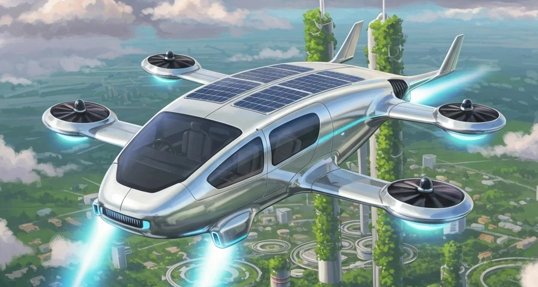

Light Version of Premeum Model
Car Name: Sky Titan - Primeum Version
Manufacturer: IDAI (Imagine the directions of Artificial Intelligence)
Motto: No matter how advanced you believe artificial intelligence to be, it is greater still—beyond even that measure of advancement.
Version: Model 2 --- Primeum Version
Sky Titan is not just a vehicle—it is a symbol of humanity’s future. When the world feels limited—crowded roads, unreachable skies, or the depths of the ocean—Sky Titan breaks those boundaries. People are no longer confined to one place; they can move freely from land to sky, and from sky to the deep sea.
This vehicle transforms human life because it represents safety, freedom, and connection. In times of danger, it protects; in times of peace, it carries and delivers. It allows people to send supplies, messages, or help quickly—even to places where ordinary vehicles cannot reach. Remote villages, storm-struck regions, or deep-sea research missions—all become accessible with Sky Titan. It is more than technology; it is the realization of human dreams. In the sky, people discover new horizons; under the sea, they explore unknown worlds. Sky Titan not only makes journeys easier but also expands imagination. In short, Sky Titan is a symbol of courage and possibility—changing lives, breaking limits, and bringing the future closer.
The Sky Titan: Primeum Version, manufactured by IDAI, is a groundbreaking hybrid vehicle that defies conventional design. At first glance, it resembles a standard automobile, but closer inspection reveals extraordinary features that merge aviation, military engineering, and off-road technology. Mounted on its roof is a massive helicopter rotor, complemented by a front-facing propeller, granting it the ability to harness aerodynamic lift and enhanced maneuverability. This fusion of car and helicopter elements suggests a machine capable of both terrestrial and aerial dominance.
At the rear, a formidable cannon is integrated, symbolizing its military-grade strength. This weaponry transforms the Sky Titan into more than just a transport vehicle—it becomes a mobile fortress, engineered for defense and tactical operations. Supporting its immense structure are six colossal wheels, designed for extreme terrains. Whether traversing deserts, rocky mountains, or flooded landscapes, these wheels ensure stability and unstoppable progress.
The design itself is a bold hybrid, blending the sleekness of a car, the mechanical complexity of a helicopter, and the armored resilience of a tank. With a maximum speed of 3 km per second, the Sky Titan is not only a marvel of futuristic imagination but also a symbol of limitless innovation, embodying power, adaptability, and vision.

The wheels used in the Sky Titan: Primeum Version are unlike those found in conventional automobiles. Inspired by monster trucks and heavy-duty off-road vehicles, these wheels are designed to emphasize both strength and spectacle. Their gigantic size immediately conveys a sense of power, suggesting that the vehicle is engineered for extreme conditions or specialized missions. Unlike standard cars, the Sky Titan features six wheels on each side, totaling twelve, which enhances stability, distributes weight evenly, and ensures maximum traction across diverse terrains.
The deep and rugged tread patterns carved into the tires are built to grip muddy, rocky, or uneven surfaces with ease. This design allows the vehicle to maintain control even in hostile environments, making it appear unstoppable. Adding to its uniqueness, the wheels are adorned with bright silver rims, while the undercarriage glows in a striking orange shade. This vivid color scheme gives the vehicle a playful, almost cartoon-like aesthetic, blending realism with imaginative artistry.
Overall, these wheels are not meant for ordinary roads. They represent a fantastical design, merging functionality with creativity. Whether envisioned as part of a futuristic game, a toy-inspired concept, or a hybrid engineering marvel, the twelve wheels of the Sky Titan embody durability, boldness, and artistic flair.

This special car features two distinct cooling systems: an air conditioner (AC) and a fan, each operated by its own remote control. In the first image, the left remote is designated for the AC, while the right one controls the fan. Both remotes share identical button layouts and modes, ensuring ease of use and intuitive control. The AC unit is designed to blow cool air directly into the cabin, maintaining a comfortable temperature during long missions or extreme weather conditions. It operates without any propeller, relying on internal cooling mechanisms and vents to distribute air evenly. In contrast, the fan system uses a spinning propeller to circulate and cool the air. This mechanical approach is ideal for quick ventilation and energy-efficient cooling. The fan’s propeller is visible and adds a dynamic visual element to the interior. Together, these systems provide layered climate control—AC for sustained cooling and the fan for rapid airflow. The dual remote setup allows passengers to adjust each system independently, enhancing comfort and customization. This thoughtful integration of cooling technology reflects the car’s commitment to both functionality and user experience.
On: Start the ac/fan.
Off: End the ac/fan.
Swing: Set the mouth of ac or fan.
Low Speed: Make the situation comfortable (not very cold and not very warm).
M’s Soon: Make the situation cool fastest.
Hit Power: Blow hot air in the winter.
Sun Mode: Blow the cool air in all sight like sun.
Minus: Blow the airs in minus temperature.
High Cool: Blow the cool air very fast.
Save Energy: Save electricity.
Water Spa: Spray waters like raining.
Sleep: Off the AC or fan for a few times.
Time Off: Off showing on the remote:
(How much of time did the AC or fan work?)
(What time is it now?)
(What day is it?)
Light: On or off the light on the AC or fan.
The picture shows the remote for controling the car manually.
ON: prepare the car for go.
OFF: close preparation of the car to go.
GO: mode for going in the normal road or soil.
FLY: mode for fly on the sky.
BOAT: mode for sail in water.
GUN: prepare the machinegun to shoot.
LIGHT: mode for on/off the lights.
SUBMARINE: mode for go under the sea.
ALL ROCKET ON/OFF: mode for on or off all triton rockets. The triton rockets helps the car to go top when it flies.
L (LEFT): turn on/off something in left.
MIDDLE ARROWS: people can control the car to use these buttons. These arrows expresses the sight that the car will go.
R (RIGHT): turn on/off something in right.
LITTLE LIGHT: turn on/off the little fog light.
FW (FORWARD): turn on/off something in forward.
BC (BACK): turn on/off something in back.
SIGNAL LIGHT: turn on/off signal light to go left or right.
LOCK: to lock the doors.
UNLOCK: to unlock the doors.
HORN: to make sound.
RIVERSE PROPELLER: turn on/off the propeller in the front sight to go reverse in the sky.
BOMB DOOR: close or open the door to fall down he bomb or any things/parcel.
TOP LIGHT: : turn on/off the top big light.
BACK LIGHT: : turn on/off back lights.
TR 01/02/03/04/05: : turn on/off the triton rocket. 01,02,03,04,05 are the code name of the rockets. There are 5 pairs of triton rocket.
TOP PROPELLAR: turn on/off the big helicopter’s propeller in top.
MIDDLE CIRCLE: this button expresses ‘OK’ or ‘STOP’ or ‘PAUSE’.
GLASS ON/OFF: turn on or off the glasses.
ENGINE ON/OFF: turn on or off the engine.
BCL 01/02/03/04/05/06: turn on/off the back lights in the back sight. These helps to see back sight. 01,02,03,04,05,06 are the code name of the lights.
PRO O1/O2/O3/04/05/06: on/off the propellers in the back sight. These helps to go forward. 01,02,03,04,05,06 are the code name of the propellers.
ALL (FIRST): on/off all propellers in the back sight.
ALL (SECOND/LAST): turn on/off all back lights in the back sight.
Main stearing wheel, exelator, break pad, ac control panel and other switch are situated entered to the around of car’s driver.
ANGLE: Shows – At what angle is the car turning.
SPEED: Shows – what speed is the car running.
GAS: Shows – situation of gas quantity.
RED LINE: Indicates – the gas level is very low.
BLUE SQUARE: Indicates – the gas level is medium.
GREEN LINE: Indicates – the gas level is very high.
RED AND WHITE POINT MONITOR: Shows – the machine gun’s target.
Unlike a conventional car with four seats, this special vehicle is equipped with four pairs of seats, totaling eight. Each seat is designed not only for comfort but also for advanced control, as passengers can operate the car from any seat using the integrated remote system. This ensures flexibility and shared responsibility during missions. The seats are fitted with multiple safety belts positioned across the belly, shoulders, and chest, providing maximum protection during high-speed travel or underwater operations. Additionally, two pairs of mechanical brackets secure the legs and hands, preventing unwanted movement in extreme conditions. These belts and brackets are manually operated—users press buttons directly on them to lock or unlock, ensuring reliability without dependence on remote systems. The final seat is specially reserved for pet animals, highlighting the vehicle’s inclusive design. Each seat comes with a control table, handle, border, and back support, making them functional workstations as well as comfortable resting places. Passengers can also control the AC and fan from their seats, ensuring personalized climate adjustment. Overall, the seating system combines safety, control, and comfort, making the car suitable for diverse passengers and missions across land, air, and sea.

The upper section of the Sky Titan: Primeum Version is a fascinating blend of energy storage and aerodynamic design. At its core lies a large, dome-shaped battery, decorated with vibrant colors and star patterns. This imaginative styling transforms a technical component into a visual centerpiece, making the battery appear not only powerful but also artistic. It symbolizes the immense energy required to propel such a hybrid vehicle into the skies, serving as both a functional and aesthetic element.
Beside the dome sits a bright, circular spotlight, resembling a searchlight. This feature suggests the vehicle’s ability to illuminate vast areas, whether for navigation in darkness or for dramatic visual effect. The spotlight adds a sense of utility and adventure, reinforcing the vehicle’s futuristic character.
Above these components, the rotor blades extend outward, functioning like traditional helicopter fans. They provide the necessary lift and airflow, enabling the Sky Titan to rise above the ground. Together, the battery, spotlight, and rotor create a playful, cartoonish yet striking appearance. While not realistic in conventional engineering, this combination embodies creativity, merging energy, light, and motion into a single imaginative design. It is a whimsical yet powerful vision of a vehicle designed to fly.
Generator: The generator is the heart of this special car, providing power to every system and function. Unlike conventional vehicles that rely solely on fuel engines or batteries, this generator is designed to supply continuous energy across multiple terrains—land, air, water, and deep-sea environments. It powers the twelve wheels, numerous propellers, Triton rockets, lighting systems, air conditioner, fan, and all electronic facilities inside the cabin. The generator is compact yet highly efficient, capable of producing immense energy without overheating, even during high-speed flight at 2.5 km per second. Its integration with the AI control system ensures smart energy distribution, prioritizing critical functions such as propulsion and navigation while maintaining comfort features like cooling and lighting. The folding top propeller connects directly to the generator, allowing seamless transition between ground mode and flight mode. In underwater missions, the generator stabilizes energy flow to withstand extreme pressure. The red battery section of the fled light also draws its charge from this generator, showing its versatility in powering both heavy machinery and smaller components. Overall, the generator symbolizes strength and reliability, acting as the central powerhouse that makes this car a true multi-terrain legend.
The fled light mounted on the top propeller is a crucial feature of this special car, designed to enhance visibility during aerial missions. It is a large, powerful light that illuminates the entire upper section of the vehicle, making the top extremely bright and visible even in dark or stormy conditions. Positioned strategically on the propeller, the fled light helps pilots and AI systems to monitor the sky above, ensuring safe navigation at high altitudes. Its brightness allows the car to detect obstacles, aircraft, or environmental hazards during flight. The red section attached to the light serves as its battery compartment, providing reliable energy storage to keep the light functioning for extended periods. This battery is compact yet durable, capable of withstanding vibrations and pressure changes during rapid ascent or descent. The fled light is not only functional but also symbolic, representing guidance and clarity in challenging environments. By combining powerful illumination with a robust energy source, it ensures that the car remains safe, visible, and effective in its role as a multi-terrain vehicle.


The rear section of the car contains six powerful back propellers, each marked with code numbers 01, 02, 03, 04, 05, and 06. These propellers are essential for propulsion, helping the vehicle move forward in three different modes: road driving, sky flying, and underwater navigation. Their synchronized rotation ensures balance and stability, while the AI system distributes thrust intelligently depending on terrain. Compact yet strong, the back propellers are built to withstand deep-sea pressure and provide smooth acceleration during flight. Together, they form the backbone of the car’s forward motion, making it versatile across multiple environments.
Alongside the back propellers, six small white fled lights are installed to illuminate the rear side of the car. These lights improve visibility, allowing passengers and the AI system to monitor the environment behind the vehicle. Each light can be switched on individually, giving flexibility to use one or multiple lights depending on the situation. Alternatively, all six lights can be activated together for maximum brightness. Their placement ensures that the car remains safe and visible during road travel, aerial missions, or underwater exploration.

On both sides of the Sky Titan: Primeum Version, powerful side propellers are mounted to enhance directional control. The left propeller enables smooth left turns during aerial flight or underwater navigation, while the right propeller performs the same function for right turns. Each propeller is originally described as having eight blades, carefully engineered to produce precise lateral thrust without destabilizing the vehicle’s balance. Their aerodynamic design ensures fluid maneuvering even at extreme speeds or under intense underwater pressure.
Inside each propeller lies a compact battery system, allowing the blades to operate independently without draining the main generator. This autonomy guarantees consistent performance, making the vehicle highly reliable in diverse environments. The integrated AI system synchronizes the side propellers with the rear and top rotors, creating a seamless network of thrust and control. As a result, the Sky Titan can execute sharp turns, hover steadily, or instantly adjust its trajectory.
In terms of design, the propellers are depicted in bright orange color with four blades, giving them a playful, cartoonish aesthetic. Their exaggerated style suggests they belong to an amphibious or hybrid vehicle, capable of moving through water, mud, or sky. Overall, the side propellers embody both functionality and artistry, reinforcing the Sky Titan’s imaginative, game-like character.

The Triton rockets are one of the most advanced propulsion systems integrated into this special car. There are five pairs in total, strategically positioned to maximize thrust and versatility. On the front side, the rockets are located beside the wheels, embedded under the lower frame. These front rockets provide forward acceleration and assist in rapid takeoff when the car transitions into flight mode. On the rear side, the rockets are situated beneath the carrier or storage box, ensuring balanced propulsion from behind. Together, the front and rear rockets create a powerful dual-thrust system, enabling the car to achieve speeds of up to 2.5 kilometers per second in the sky. The rockets also play a vital role in underwater missions, pushing the vehicle forward against heavy resistance. Each rocket is compact yet extremely powerful, designed to withstand high pressure and temperature during operation. Controlled by the AI system, the rockets synchronize with the propellers to deliver smooth, stable movement across land, air, and sea. Their placement beside the wheels and under the carrier highlights the car’s engineering brilliance, combining practicality with futuristic technology.
 

The front side of the Sky Titan: Primeum Version is a sophisticated hub of visibility and control, engineered to handle diverse environments. At its core, the system features two powerful headlights, designed to project maximum brightness and illuminate the road or sky during night missions or in dark conditions. These headlights are crucial for both the AI system and passengers, ensuring clarity and safety. Complementing them are two fog lights, which provide softer illumination. Their balanced glow is particularly effective in misty or underwater settings, preventing glare and maintaining visibility.
Each side of the vehicle is equipped with a headlight–fog light pair, with the right pair illuminating only the right side and the left pair illuminating only the left. This directional clarity enhances maneuverability and precision. Additionally, two signal lights are positioned at the front, one on each side, clearly indicating left or right turns to surrounding vehicles or observers.
Integrated into this system is a reverse propeller, enabling backward movement when required. The propeller itself is powered by a turboprop engine, using gas turbine technology to rotate its blades. Artistic details include a blue glow inside the engine, symbolizing energy flow, and finely depicted pipes and wires that highlight mechanical intricacy. The red front blades assist in lift and control, while yellow rectangular headlights emphasize nighttime visibility. Altogether, the design suggests a hybrid machine capable of operating seamlessly on both land and in the sky.

The rear side of the car is equipped with a sophisticated signal light system divided into three distinct parts.
Part 1 (Yellow): These lights indicate turning directions. When the left yellow light is activated, it signals that the car will turn left; when the right yellow light is on, it signals a right turn. This ensures clear communication to surrounding vehicles or observers during road, sky, or underwater navigation.
Part 2 (Blue): This light indicates that the car is moving backward. When illuminated, it alerts others that the vehicle is reversing, enhancing safety in tight spaces or complex environments.
Part 3 (Red & Pink): These lights signify that the car is actively running. Their glow provides a constant indicator of motion, ensuring visibility and awareness for those nearby.
Together, the three-part signal system makes the rear section highly functional, combining directional guidance, reverse indication, and running status. This integration of color-coded signals enhances safety, clarity, and coordination across all terrains.

The front-side view glass of this special car is more than just a transparent panel—it is a multifunctional system combining visibility and technology. Made from clean, durable material, the glass provides a clear view of the outside environment, allowing the driver or passengers to observe surroundings during road travel, flight, or underwater missions. Integrated within the glass is a high-resolution camera, which continuously records and transmits visual data to the AI system. This dual function ensures both human and AI operators have accurate situational awareness. The glass is designed to be opened when needed, offering ventilation or direct interaction with the outside environment. Its structure is reinforced to withstand high pressure and extreme conditions, making it reliable even at 1000 km underwater depth or during high-speed flight. The camera embedded in the glass also supports remote monitoring, enabling external controllers to oversee the car’s movement. Overall, the front-side view glass represents a perfect blend of clarity, safety, and advanced technology, ensuring the vehicle remains both user-friendly and futuristic.

The Sky Titan: Premeum Version is equipped with a specialized Silencer system, which is far more advanced than conventional exhaust technology. Unlike ordinary silencers that simply reduce noise, this futuristic design integrates high-performance energy release mechanisms. It is described as being capable of ejecting flames at high speed, similar to the dramatic exhaust bursts seen in supercars such as the Nissan GT-R. This fiery output not only symbolizes raw power but also highlights the vehicle’s hybrid nature, blending automotive aggression with imaginative artistry.
The silencer is engineered with cutting-edge materials that can withstand extreme heat and pressure, ensuring durability during high-speed operations. Its aerodynamic shape channels exhaust flow efficiently, reducing drag while amplifying thrust. Integrated sensors and AI coordination allow the silencer to adjust flame intensity depending on the vehicle’s mode—whether accelerating on land, hovering in the sky, or maneuvering underwater.
Visually, the silencer is designed to be striking, with glowing accents that emphasize its futuristic character. It is not merely a functional component but a statement of innovation, combining performance, spectacle, and advanced engineering. In essence, the silencer transforms the Sky Titan into a machine that embodies speed, strength, and creativity, pushing beyond the limits of traditional design.
The battery system of the Sky Titan: Premeum Version represents the pinnacle of futuristic energy technology. It is designed as the most modern power source, capable of supporting the vehicle across multiple environments—whether driving on roads, swimming through water, or soaring in the sky. At the heart of this system lies a dual energy supply: a central generator and a high-capacity battery. Together, they ensure uninterrupted performance, distributing power seamlessly to every component of the vehicle.
What makes this design extraordinary is its multi-source energy integration. The wheels and propellers are not just mechanical parts; they also function as auxiliary energy producers, converting motion into electricity. This regenerative system allows the Sky Titan to recharge itself while in operation, extending its endurance far beyond conventional vehicles.
The battery itself is envisioned as a colorful, dome-shaped unit, symbolizing both strength and creativity. It is engineered to withstand extreme conditions, from underwater pressure to high-altitude flight. Coordinated by the AI system, the generator and battery balance energy flow, ensuring that propulsion, lighting, and weaponry all receive optimal power. In essence, the battery transforms the Sky Titan into a self-sustaining hybrid machine, capable of conquering land, water, and sky with unmatched efficiency.
The control panel of the Sky Titan Premium Version resembles the cockpit of a futuristic spacecraft rather than a conventional car dashboard. Multiple digital screens dominate the interface, glowing in vibrant blue-green hues. These displays provide real-time navigation data, sensor readings, system diagnostics, and waveform-style graphics, ensuring the pilot has complete situational awareness. The physical controls include numerous switches and push buttons, designed for activating or shutting down specific subsystems. At the center lies a primary lever or joystick, the core mechanism for maneuvering the vehicle across diverse terrains or even aerial routes. Complementing these are haptic touch interfaces, offering tactile feedback to enhance precision and responsiveness. The environment is deliberately dim, allowing the illuminated screens and buttons to create a cyberpunk aesthetic. Metallic surfaces and clean structural lines emphasize efficiency and advanced engineering. Overall, this control panel is not just functional—it is a high-tech command center, capable of managing complex systems far beyond modern automobiles, echoing the immersive designs seen in science fiction films and video games.
The microphone system of this special car is designed to enable clear communication with people outside the vehicle. Positioned on the roof, directly beneath the top propeller, the microphones broadcast voices loudly and effectively, ensuring instructions or alerts can be heard in any environment—whether on land, in the sky, or underwater. There are four microphones in total, each assigned to a different passenger, allowing multiple individuals to speak and coordinate simultaneously. The black section represents the main microphone, which acts as the central hub for sound transmission. Beneath it lies a semi-circular regulator, which controls the microphone’s volume and broadcasting strength. This regulator ensures that voices remain clear without distortion, even when the car is moving at high speed or facing environmental noise. The system is integrated with the AI, which can filter background sounds and amplify speech for maximum clarity. By combining multiple microphones with a central regulator, the car provides a robust communication platform, making it possible to issue commands, warnings, or collaborative instructions to people outside. This feature highlights the car’s focus on safety, coordination, and futuristic design.

The picture highlights the microphone system from an above angle, showcasing its advanced control panel. At the center of this setup is the red monitor, which serves as the main control interface. Through this monitor, passengers can manage microphone activity, adjust broadcasting levels, and monitor sound output. It ensures that communication with people outside the car remains clear and effective. Beside the monitor lies the orange square box, which contains the main war and functional controls. This section is responsible for activating key microphone features, such as switching between individual microphones, regulating sound strength, and coordinating multiple voices simultaneously. The integration of the orange box with the red monitor creates a seamless system where both visual feedback and manual control are available. Positioned above, the microphones themselves remain connected to this panel, ensuring that every instruction or alert is transmitted with precision. Together, the red monitor and orange square box form the backbone of the car’s communication system, combining clarity, control, and reliability in one compact design.
VOL UP:Up the volume
VOL DOWN: Down the volume
FORWARD ARROW: Broadcast to forward
BACK ARROW: Broadcast to back
LEFT ARROW: Braodcast to left
RIGHT ARROW: Broadcast to right
MIDDLE PLUS SHAPE: Express ‘OK’

NAME: Dropping Door
CAPACITY: 10 Kilogram
AREA: 5 square feet.
SIZE: 5 feet X 5 feet
WORK: Fall down parcel or bombs.
CONTROL: from car control remote.
DESCRIBE: The dropping door of this special car is a multifunctional system designed for both defense and utility. During times of danger or war, the door can be activated to release bombs or grenades, making it a tactical feature for combat missions. Its mechanism is engineered to open swiftly and securely, ensuring that payloads are deployed with precision. Outside of combat, the dropping door serves a practical purpose: it can be used to release boxes, parcels, or other goods. This makes the car versatile, functioning not only as a defense vehicle but also as a transport system. The door operates with a wear-based mechanism, allowing goods to be lowered safely without damage. This ensures that supplies or packages can be delivered efficiently, whether on land, in the sky, or underwater. The locking system of the dropping door guarantees that it remains sealed when not in use, preventing accidental release. Overall, the dropping door represents adaptability—capable of switching between military and civilian functions seamlessly, highlighting the car’s futuristic design and multipurpose engineering.

NAME: Carrier or Bringing Box
CAPACITY: 30 Kilogram
AREA: 3 square feet
SIZE: 3 feet X 3 feet
WORK: load things and goods from a place to another.
DISCRIBE: The bringing box of this special car is a secure and functional storage unit, designed to carry essential items during missions. Structurally, it consists of a cover, three walls, and a defined color scheme that makes it visually distinct from the rest of the vehicle. The cover is supported by moving nuts, which allow smooth opening and closing of the door. These nuts act as mechanical pivots, ensuring that the cover can be set firmly in place when locked. The box is equipped with a single locking system, which is password-protected. This feature ensures that any items placed inside remain safe and accessible only to authorized users. The password system adds a futuristic layer of security, making the box reliable for storing sensitive or valuable materials. Despite its compact design, the bringing box is spacious enough to hold supplies, tools, or personal belongings. Its integration with the car’s overall design highlights both practicality and innovation. By combining mechanical precision with digital security, the bringing box serves as a trustworthy companion for passengers, ensuring that their belongings remain protected across land, air, and sea journeys.
The special gun of this car is a tactical feature, positioned above the carrier and beside the back signal lights. Its design integrates multiple mechanical parts, each serving a distinct function.
The black section is the magazine, responsible for storing bullets securely and feeding them into the firing chamber. The yellow part acts as the moving nut, enabling smooth mechanical motion during loading and firing.
The blue part is the setting nut, which allows adjustments to the gun’s alignment and stability, ensuring precise targeting.
Finally, the yellow circular section represents the mouth of the gun, where bullets are discharged with controlled force. This mouth is engineered to withstand high pressure, ensuring durability during repeated use.
The gun is connected to the car’s AI system, which can regulate firing speed and accuracy, making it adaptable for both defensive and tactical missions. While primarily designed for combat scenarios, the gun’s modular structure highlights engineering precision, combining safety mechanisms with powerful performance. Its placement above the carrier ensures wide coverage at the rear, protecting the vehicle from threats while maintaining balance with other systems.

Sky Titan Voyager, known in its prototype stage as the Thunder Bolt Super Bus, is a futuristic hybrid vehicle created through the combined technologies of UAD (Universal Advanced Drive) and IDAI (Imagine the directions of Artificial Intelligence). Capable of running on roads as well as flying in the sky, it maintains the structure of a modern city bus while being equipped with helicopter rotors, a tail rotor, and side propellers. These features enable Vertical Take-Off and Landing technology, allowing the bus to rise directly into the air. Its powerful hybrid engine uses both electricity and jet fuel, while an AI-controlled power management system distributes energy as needed for maximum efficiency.
Inside Sky Titan Voyager, passengers enjoy luxurious reclining seats, charging ports, smart air conditioning, a 3D sound system, and adaptive lighting that changes with the environment. Safety is prioritized with airbags fitted to every seat, sensor-based accident prevention systems, flight stabilizers, and emergency parachutes. A distinctive feature of this bus is its defensive capability: four machine guns—two mounted on the roof and two on either side—designed primarily for passenger protection during disasters or hostile attacks.
Environmentally friendly technologies such as solar charging panels and low carbon emissions make the Sky Titan Voyager more sustainable. It can serve in metropolitan transport, airport shuttles, tourism, or even rescue missions. More than just a vehicle, it stands as a symbol of futuristic power, freedom, and technological excellence, redefining what public transport can achieve both on land and in the sky.
The Sky Titan Voyager, known in prototype form as the Thunder Bolt Super Bus, is priced at Tk. 20 million. This valuation reflects its groundbreaking hybrid design, combining UAD and IDAI technology to create a vehicle capable of both road travel and aerial flight. The price balances futuristic engineering with sustainability, positioning the Voyager as a revolutionary transport solution for metropolitan routes, airport shuttles, tourism, and rescue missions.
 



Press the button ‘ON’ and ‘GO’.
Then press the button ‘ENGINE ON/OFF’.
Press the arrow button that indicating forward.
If you press the arrow button that indicating forward one time, the speed will be up 5 kilometer.
If you press the arrow button that indicating back one time, the speed will be down 5 kilometer.
Press the button ‘ON’ and ‘GO’ or ‘FLY’ (if necessary) .
Then press the button ‘ENGINE ON/OFF’.
Press the ‘L’ (LEFT) button.
If you press the button ‘L’ one time, the car turn left in 5 degree angle.
Press the ‘R’ (RIGHT) button.
If you press the button ‘R’ one time, the car turn right in 5 degree angle.
Press the button ‘ON’ and ‘GO’.
Then press the button ‘ENGINE ON/OFF’.
Press the ‘FW’ (FORWARD) button.
If you press the ‘FW’ button one time, the car stay straight.
If you press the ‘FW’ button double, the car will break it’s straightness.
Press the button ‘BC’ (BACK).
If you press the button ‘BC’ or ‘REVERSE’ one time, the car go reverse.
If you press ‘BC’ button again, the car starts going forward.
Go near a sea or pond or water.
Press the button ‘ON’ and ‘BOAT’.
Then press ‘ENGINE ON/OFF’ button.
Press ‘SUBMARINE’ button.
Press the buttons ‘PRO 01’, ‘PRO 02’, ‘PRO 03’, ‘PRO 05’, PRO 06’.
Then press button ‘ALL’ (first). Don’t press this at first.
Press ‘GO’.
Then control the car like ‘GO’ mode.
Go near a sea or pond or water.
Press the button ‘ON’ and ‘BOAT’.
Press ‘GO’ button to on it’s wheels.
Up or down the speed, if necessary.
If you need to go back, press ‘BC’ button.
If you press the button ‘BC’ or ‘REVERSE’ one time, the car go reverse.
If you press ‘BC’ button again, the car starts going forward.
Press the button ‘ON’ and ‘FLY’.
Then press the button ‘ENGINE ON/OFF’.
Press the buttons ‘PRO 01’, ‘PRO 02’, ‘PRO 03’, ‘PRO 05’, PRO 06’.
Then press button ‘ALL’ (first). Don’t press this at first.
Press the ‘TOP PROPELLER’ button.
Then press ‘TR 01’, ‘TR 02’, ‘TR 03’, ‘TR 04’, ‘TR 05’ buttons.
Then press button ‘ALL’ (second).
If you have to go fast, you can press it first.
Press ‘ON’ button.
Press ‘ALL TRITON ROCKET ON/OFF’ mode button, to reach the top fast.
If you want to reach the top slowly, you can press ‘TR 01’; ‘TR 02’; ‘TR 03’; ‘TR 04’ and ‘TR 05’ buttons.
Press ‘ON’.
Control the microphone by using the microphone regulator.
To control the regulator, use buttons of the regulator.
To turn the microphone on, please press ‘VOL UP’ button.
To turn the microphone off, press ‘VOL DOWN’ again.
Regulate the microphone.
Broadcast, if necessary.
Put boxes in the career.
Put the lock-unlock system clean and safe.
Sit in the inside seats.
Press ‘LOCK’ to lock all doors (dropping door, main door, career door).
Press ‘UNLOCK’ to unlock all doors (dropping door, main door, career door).
Press ‘ON’.
Press ‘LIGHT’ mood button to on headlight.
Press ‘L’ button to on left headlight.
Press ‘R’ button to on right headlight.
Press ‘FW’ button to on both headlights.
Press ‘SIGNAL LIGHT’ to on signal yellow lights.
Press ‘L’ button to on left signal light.
Press ‘R’ button to on right signal light.
Press ‘FW’ button to on both signal yellow lights.
Press ‘LITTLE LIGHT’ button to on little fled lights.
Press ‘LIGHT’ and ‘BC’ to on back fled light.
To on one back light, press ‘BCL 01’.
To on 2 back light, press ‘BCL 02’.
To on 3 back light, press ‘BCL 03’.
To on 4 back light, press ‘BCL 04’.
To on 5 back light, press ‘BCL 05’.
To on 6 back light, press ‘BCL 06’.
Press ‘ON’.
Press ‘MACHINEGUN’ mood.
Use arrows to set the target.
Lock the target by using ‘LOCK’ button.
Press middle circle ‘OK’ button to finally shoot.
Press ‘ON’.
Fly and take the position.
The target will must be under the bomb door.
You can see the target by using under cameras.
Press ‘UNLOCK’ button.
Press ‘BOMB DOOR’ button to open the bomb door.
At this time, the Car Company send a OTP (One Time Password) to your message inbox.
Send the password to car system (car’s back number).
Finally, press middle circle ‘OK’ button to fall down the parcel or bomb or goods.
Press ‘BOMB DOOR’ button again to close the bomb door.